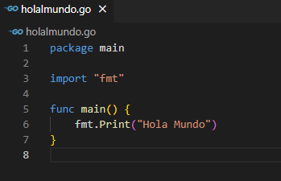
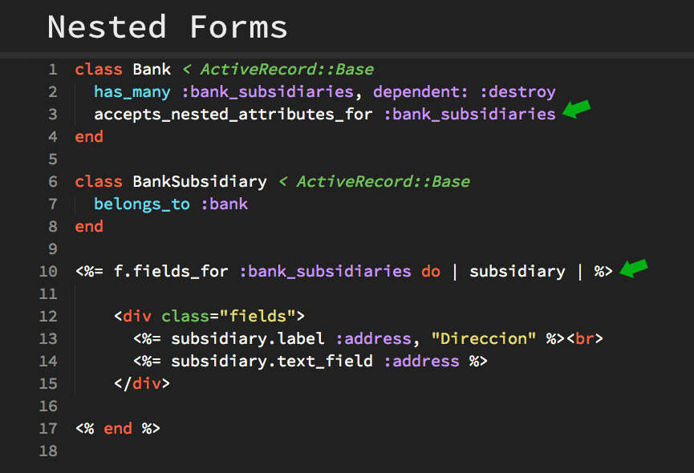

Se podría decir que en le estas 3 empresas es muy usado porque al ser versátil lo pone como un programa altamente amigable al usuario, y estas páginas al estar en constante contacto al usuario, lo hace indispensable en su código.
Estas paginan solo son unos ejemplos del extenso catálogo que tiene PHP en el uso de este para creación de dichas páginas, dado que actualmente muchas de ellas han ido migrando a tecnologías más actuales, no deja de ser indispensable para muchos, el haber comenzado primero con código PHP.
Estos son unas de las muchas empresas que usan este lenguaje, en Dropbox, tenemos que fue usado para migrar ciertos componentes de Python, en Uber para el manejo de grandes datos en tiempo real por georreferencia, y por último Google también usa dicho lenguaje ya que, si no lo dije antes, Google es la creadora de dicha tecnología, lo increíble al usar este lenguaje es que es adaptable a cualquier sistema operativo. (GOOGLE CORPORATION, 2018)
Aunque quizás en algunas de ellas como Twitter, ya no hacen uso del lenguaje, cabe destacar que fue su lenguaje inicial, ya que Ruby es muy usado para aplicaciones web, lo hace muy versátil para dichos sitios, más si son de pagos o ventas en sí, así mismo para el almacenaje como lo es GitHub ya que al procesar una gran cantidad de solicitudes ayuda a hacerlo de una forma rápida y eficaz. (Ortego Delgado, 2017)
